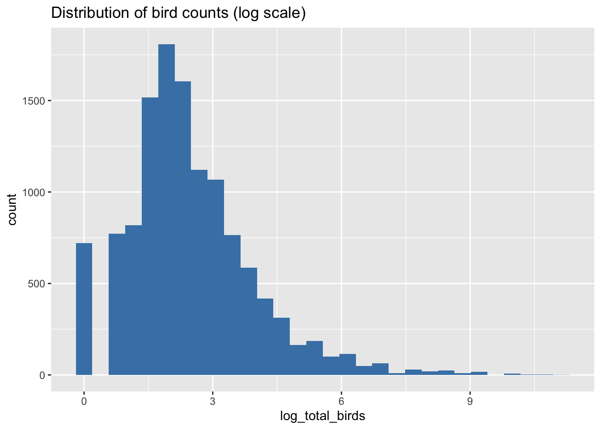
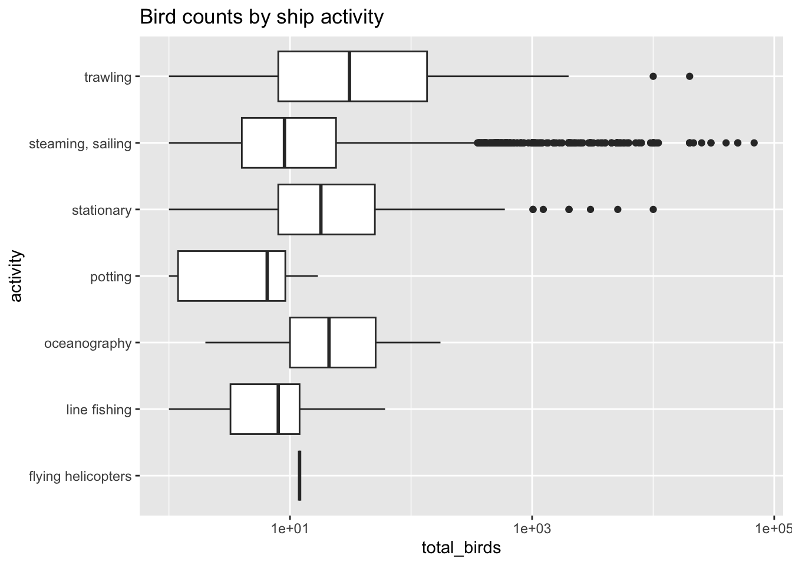
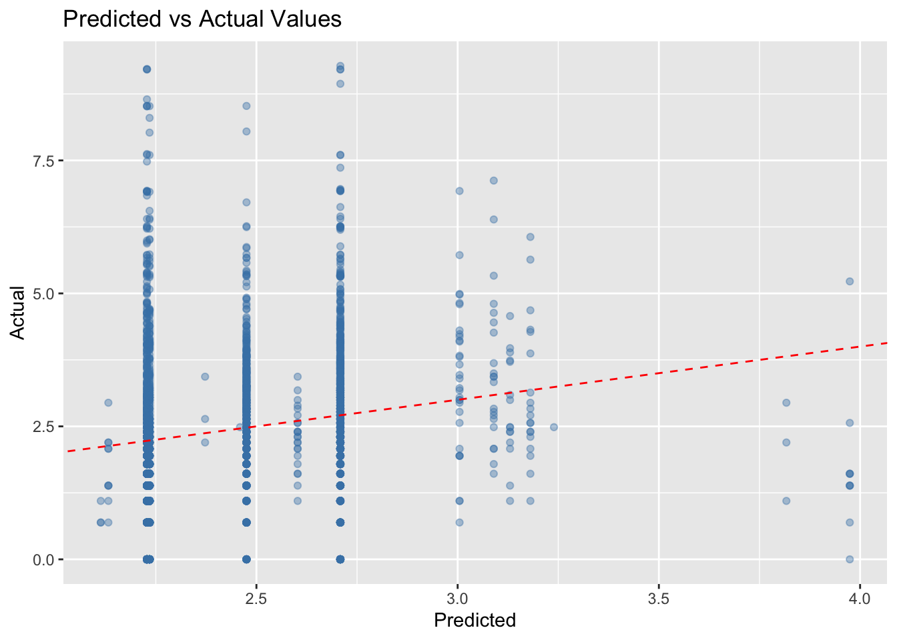

The Tidy Tuesday Exercise for this week (04/14) is Bird Sightings at Sea.
Overview
This analysis uses the TidyTuesday Bird Sightings at Sea dataset. The data come from Te Papa Tongarewa, Museum of New Zealand, and contain 10-minute seabird count records made from ships near New Zealand from 1969 to 1990.
Question:
Can ship activity and season predict the number of birds seen in a 10-minute census?
A 10-minute census period is A standardized observation window where researchers counted birds for exactly 10 minutes from a ship.
Outcome: log_total_birds = log1p(total_birds)
Key predictors: activity, season
Exploratory Data Analysis:
Load libraries:
library(tidyverse)
Warning: package 'ggplot2' was built under R version 4.4.3
Warning: package 'tibble' was built under R version 4.4.3
Warning: package 'tidyr' was built under R version 4.4.3
Warning: package 'readr' was built under R version 4.4.3
Warning: package 'purrr' was built under R version 4.4.3
Warning: package 'dplyr' was built under R version 4.4.3
Warning: package 'lubridate' was built under R version 4.4.3
── Attaching core tidyverse packages ──────────────────────── tidyverse 2.0.0 ──
✔ dplyr 1.2.0 ✔ readr 2.2.0
✔ forcats 1.0.1 ✔ stringr 1.6.0
✔ ggplot2 4.0.2 ✔ tibble 3.3.1
✔ lubridate 1.9.5 ✔ tidyr 1.3.2
✔ purrr 1.2.1
── Conflicts ────────────────────────────────────────── tidyverse_conflicts() ──
✖ dplyr::filter() masks stats::filter()
✖ dplyr::lag() masks stats::lag()
ℹ Use the conflicted package (<http://conflicted.r-lib.org/>) to force all conflicts to become errors
Rows: 12310 Columns: 21
── Column specification ────────────────────────────────────────────────────────
Delimiter: ","
chr (7): hemisphere, activity, cloud_cover, precipitation, observer, censu...
dbl (12): record_id, latitude, longitude, speed, direction, wind_speed_clas...
date (1): date
time (1): time
ℹ Use `spec()` to retrieve the full column specification for this data.
ℹ Specify the column types or set `show_col_types = FALSE` to quiet this message.
Cleaning and processing dataset
Data processing involved cleaning the bird count data, handling missing values, and aggregating observations to the 10-minute census level before merging with ship data.
ggplot(analysis_data, aes(x = log_total_birds)) +geom_histogram(bins =30, fill ="steelblue") +labs(title ="Distribution of bird counts (log scale)")

2. Birds by activity
ggplot(analysis_data, aes(x = activity, y = total_birds)) +geom_boxplot() +scale_y_log10() +coord_flip() +labs(title ="Bird counts by ship activity")
Warning in scale_y_log10(): log-10 transformation introduced infinite values.
Warning: Removed 720 rows containing non-finite outside the scale range
(`stat_boxplot()`).

For this analysis, I selected season and activity as the main predictors. Season was included because bird abundance is likely influenced by seasonal patterns such as migration, breeding cycles, and food availability. Activity (what the ship is doing) was included because certain activities, such as fishing or waste disposal, may attract birds and increase observed counts.
# A tibble: 6 × 7
.metric .estimator mean n std_err .config model
<chr> <chr> <dbl> <int> <dbl> <chr> <chr>
1 rmse standard 1.46 5 0.0170 pre0_mod0_post0 lm
2 rsq standard 0.0431 5 0.00267 pre0_mod0_post0 lm
3 rmse standard 1.46 5 0.0172 pre0_mod0_post0 rf
4 rsq standard 0.0435 5 0.00358 pre0_mod0_post0 rf
5 rmse standard 1.59 5 0.0316 pre0_mod0_post0 knn
6 rsq standard 0.00564 5 0.00262 pre0_mod0_post0 knn
Choose final model
I selected the random forest model as the final model. Although its performance was similar to linear regression, random forests can capture nonlinear relationships and interactions between variables. This makes it a more flexible choice for ecological data, where relationships are often complex.
final_model <- rf_wf |>fit(train)
Predicted vs actual plot:
preds <-predict(final_model, test) |>bind_cols(test)ggplot(preds, aes(x = .pred, y = log_total_birds)) +geom_point(alpha =0.4, color ="steelblue") +geom_abline(slope =1, intercept =0, linetype =2, color ="red") +labs(title ="Predicted vs Actual Values",x ="Predicted",y ="Actual" )

This plot compares predicted and actual values from the final model. The points are widely scattered around the diagonal line, indicating that the model has limited predictive accuracy. The predicted values are concentrated within a narrow range, while the actual values vary much more widely. This suggests that the model is not capturing the full variability in bird counts, particularly for higher values. This pattern is expected because the model uses only a small number of predictors (season and activity), which are insufficient to fully explain bird abundance.
Test set evaluation
preds <-predict(final_model, test) |>bind_cols(test)metrics(preds, truth = log_total_birds, estimate = .pred)
# A tibble: 2 × 3
.metric .estimator .estimate
<chr> <chr> <dbl>
1 rmse standard 1.45
2 rsq standard 0.0310
The linear regression and random forest models performed similarly, with RMSE around 1.46 and low R² (~0.04), indicating limited predictive power. The k-nearest neighbors model performed worse, suggesting it is less suitable for this dataset. Overall, the models explain only a small portion of the variability in bird counts, indicating that important predictors are likely not considered.
This analysis examined whether ship activity and season can predict bird abundance during 10-minute census periods. The exploratory analysis showed that bird counts are highly skewed and vary across ship activities. This suggests that human activity may influence bird presence. Three models were fitted using the tidymodels framework. Random forest and linear regression performed similarly, while k-nearest neighbors performed worse. The random forest model was selected due to its flexibility. Final evaluation on the test set showed modest predictive performance, with low R². This suggests that while activity and season contribute some information, many important factors affecting bird abundance are not captured in the model. Overall, this analysis demonstrates that bird abundance is difficult to predict using only a few variables, and more detailed environmental or ecological predictors would likely improve model performance.